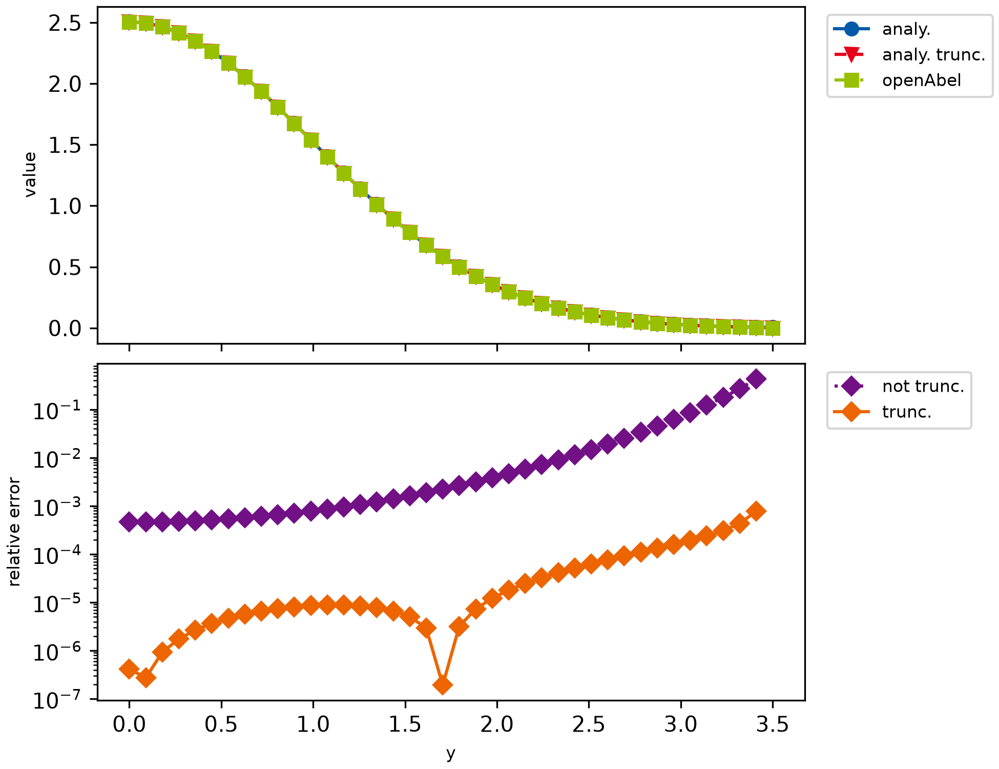

example000_simple_forward¶
This example is just a simple forward transform of a Gaussian. Aside from showing how to do a simple forward transform, this example shows how for non truncated domain an error is introduced.

############################################################################################################################################
# Simple example which calculates forward Abel transform of a Gaussian.
# Results are compared with the analytical solution. Mostly default parameters are used.
############################################################################################################################################
import matplotlib.pyplot as mpl
import numpy as np
from scipy.special import erf
import openabel
############################################################################################################################################
# Plotting setup
# This block can be ignored, it's just for nicer plots.
params = {
"axes.labelsize": 8,
"font.size": 8,
"legend.fontsize": 8,
"xtick.labelsize": 10,
"ytick.labelsize": 10,
"text.usetex": False,
"figure.figsize": [6.5, 5.0],
}
mpl.rcParams.update(params)
# Color scheme
colors = [
"#005AA9",
"#E6001A",
"#99C000",
"#721085",
"#EC6500",
"#009D81",
"#A60084",
"#0083CC",
"#F5A300",
"#C9D400",
"#FDCA00",
]
# Plot markers
markers = ["o", "v", "s", "D", "p", "*", "h", "+", "^", "x"]
# Line styles
linestyles = ["-", "--", "-.", ":", "-", "--", "-.", ":", "-", "--", "-.", ":"]
lw = 2
############################################################################################################################################
# Parameters
n_data = 40
shift = 0.0
x_max = 3.5
sig = 1.0
step_size = x_max / (n_data - 1)
forward_backward = -1 # Forward transform, similar definition ('-1' = forward) as in FFT libraries.
# Create Abel transform object, which does all precomputation possible without knowing the exact data.
abel_obj = openabel.Abel(n_data, forward_backward, shift, step_size, order=3)
# Input data
xx = np.linspace(shift * step_size, x_max, n_data)
data_in = np.exp(-0.5 * xx**2 / sig**2)
# Forward Abel transform and analytical result.
# We show both the analytical result of a truncated Gaussian and a standard Gaussian to show
# that some error is due to truncation.
data_out = abel_obj.execute(data_in)
data_out_ana = data_in * np.sqrt(2 * np.pi) * sig
data_out_ana_trunc = data_in * np.sqrt(2 * np.pi) * sig * erf(np.sqrt((x_max**2 - xx**2) / 2) / sig)
# Plotting
fig, axarr = mpl.subplots(2, 1, sharex=True, layout="constrained")
axarr[0].plot(xx, data_out_ana, color=colors[0], marker=markers[0], linestyle=linestyles[0], label="analy.")
axarr[0].plot(
xx,
data_out_ana_trunc,
color=colors[1],
marker=markers[1],
linestyle=linestyles[1],
label="analy. trunc.",
)
axarr[0].plot(xx, data_out, color=colors[2], marker=markers[2], linestyle=linestyles[2], label="openAbel")
axarr[0].set_ylabel("value")
axarr[0].legend(loc="upper left", bbox_to_anchor=(1.02, 1.0))
axarr[1].semilogy(
xx[:-1],
np.abs((data_out[:-1] - data_out_ana[:-1]) / data_out_ana[:-1]),
color=colors[3],
marker=markers[3],
linestyle=linestyles[3],
label="not trunc.",
)
axarr[1].semilogy(
xx[:-1],
np.abs((data_out[:-1] - data_out_ana_trunc[:-1]) / data_out_ana_trunc[:-1]),
color=colors[4],
marker=markers[3],
linestyle=linestyles[4],
label="trunc.",
)
axarr[1].set_ylabel("relative error")
axarr[1].set_xlabel("y")
axarr[1].legend(loc="upper left", bbox_to_anchor=(1.02, 1.0))
mpl.savefig("example000_simple_forward.png", dpi=300)
mpl.show()